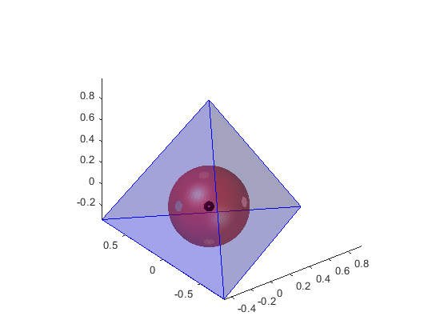
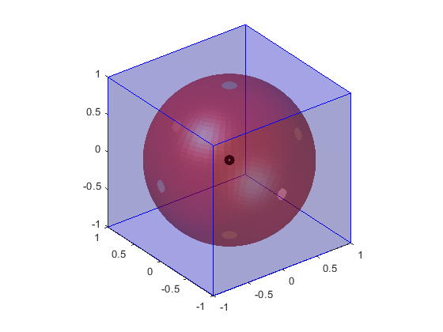
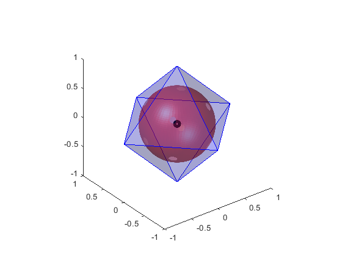

regular_polyhedron_insphere
Function to compute and display the insphere of a regular polyhedron.
Author : nicolas.douillet9 (at) gmail.com, 2023-2024.
Contents
Syntax
regular_polyhedron_insphere(P, F);
regular_polyhedron_insphere(P, F, nb_samples);
regular_polyhedron_insphere(P, F, nb_samples, option_display);
[I, r, S] = regular_polyhedron_insphere(P, F, nb_samples, option_display);
Description
regular_polyhedron_insphere(P, F) computes and displays the insphere of polyhedron (P,F).
regular_polyhedron_insphere(P, F, nb_samples) uses nb_samples to mesh the sphere.
regular_polyhedron_insphere(P, F, nb_samples, option_display) displays the sphere when option_display is set either to logical true or real numeric 1, and doesn't when it is set to logical false or real numeric 0.
[I, r, S] = regular_polyhedron_insphere(P, F, nb_samples, option_display) stores the results in [I, r, S] vector.
See also
| tetrahedron_insphere | platonic_solids | regular_3D_polygon_incircle | tetrahedron_circumsphere |
Input arguments
[ | | |]
- P = [Py Py Pz] : real matrix double. size(P,1) € {4,6,8,12,20}. size(P,2) = 3. The polyhedron vertex coordinates.
[ | | |] [| | | ]
- F = [i1 i2 i3], positive integer matrix double, the face set. size(T) = [nb_faces,nb_vertex_per_faces].
[| | | ]- nb_samples : integer scalar double. The number of samples to mesh the insphere. nb_samples >= 3.
- option_display : logical *true(1) / false(0), to enable/disable the display mode.
Output arguments
[| | | ]
- I = [Ix Iy Iz] : real column vector double. numel(I) = 3. The insphere centre coordinates.
[| | | ]- r : real scalar double. The insphere radius.
[ | ] [ | ] [ | ]
- S = [ - Sx - ] /// [ - Sy - ] /// [ - Sz - ] : real matrix double. The insphere sample coordinates. size(S) = [nb_samples, nb_samples, 3].
[ | ] [ | ] [ | ]Example #1
Regular tetrahedron
P = [0 0 1;... 2*sqrt(2)/3 0 -1/3;... -sqrt(2)/3 sqrt(6)/3 -1/3;... -sqrt(2)/3 -sqrt(6)/3 -1/3]; F = [1 2 3; 1 3 4; 1 4 2; 2 4 3]; nb_samples = 60; [I,r] = regular_polyhedron_insphere(P,F,nb_samples,true) % expected : I = [0 0 0]; r = 1/3;
I =
1.0e-16 *
0 0 0.2776
r =
0.3333
 Example #2
Cube / hexahedron
P = [ 1 1 1;... -1 1 1;... -1 -1 1;... 1 -1 1;... 1 1 -1;... -1 1 -1;... -1 -1 -1;... 1 -1 -1]; F = [1 2 3 4;... 8 7 6 5;... 1 4 8 5;... 2 1 5 6;... 3 2 6 7;... 4 3 7 8]; nb_samples = 60; [I,r] = regular_polyhedron_insphere(P,F,nb_samples,true) % expected : I = [0 0 0]; r = 1
I =
0 0 0
r =
1
 Example #3
Regular octahedron
P = [ 1 0 0;... 0 1 0;... -1 0 0; 0 -1 0;... 0 0 1;... 0 0 -1]; F = [1 2 5;... 2 3 5;... 3 4 5;... 4 1 5;... 1 6 2;... 2 6 3;... 3 6 4;... 4 6 1]; nb_samples = 60; [I,r] = regular_polyhedron_insphere(P,F,nb_samples,true) % expected : I = [0 0 0]; r = sqrt(3)/3
I =
0 0 0
r =
0.5774
